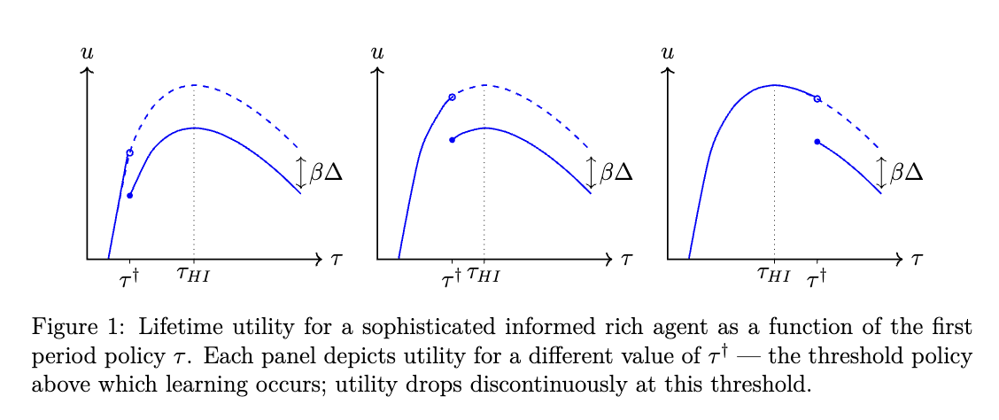
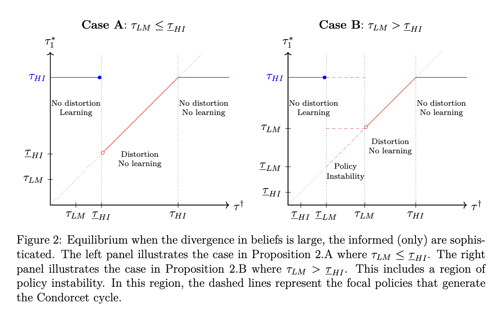
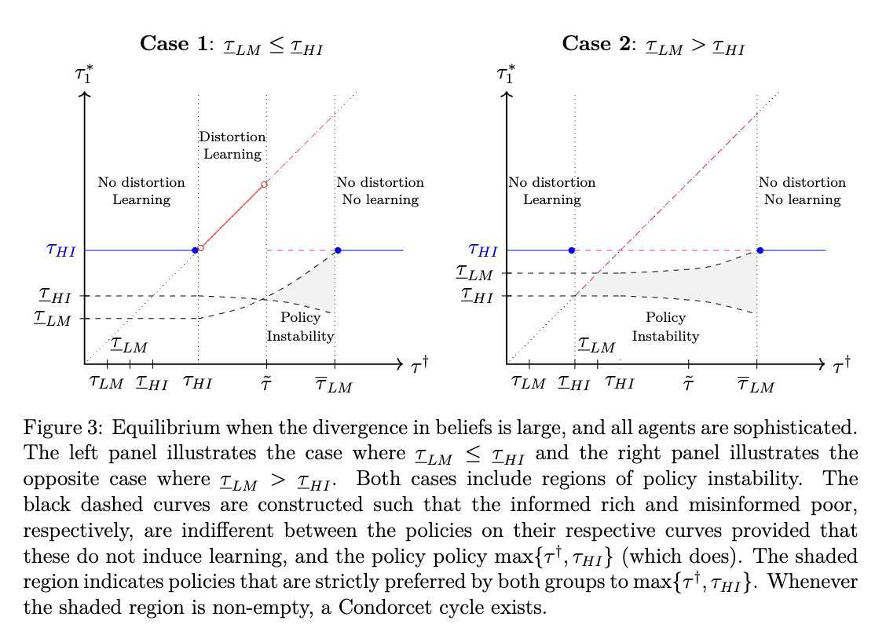

Download
Abstract
Slippery slope arguments — the idea that otherwise beneficial reforms should be re- jected lest they beget further undesirable one — are ubiquitous in political discourse. We provide a learning-based policy-feedback mechanism to explain why slippery slope dynamics arise. Additionally, we provide conditions under which, in equilibrium, so- phisticated agents will successfully manipulate policy to either induce or prevent a slippery slope dynamic.
Figure 1: Violations of Single-Peakedness

Figure 2: Standard Policy Dynamics

Figure 3: Policy Dynamics with Instabilities

Citation
Parameswaran, Giri, Gabriel Sekeres, and Haya Goldblatt. Forthcoming. “The Politics of the Slippery Slope.” Journal of Politics. doi: 10.1086/732965
@article{PSG24,
author = {Giri Parameswaran and Gabriel Sekeres and Haya Goldblatt},
year = {2024},
title ={The Politics of the Slippery Slope},
journal = {Journal of Politics},
url = {https://doi.org/10.1086/732965}
}